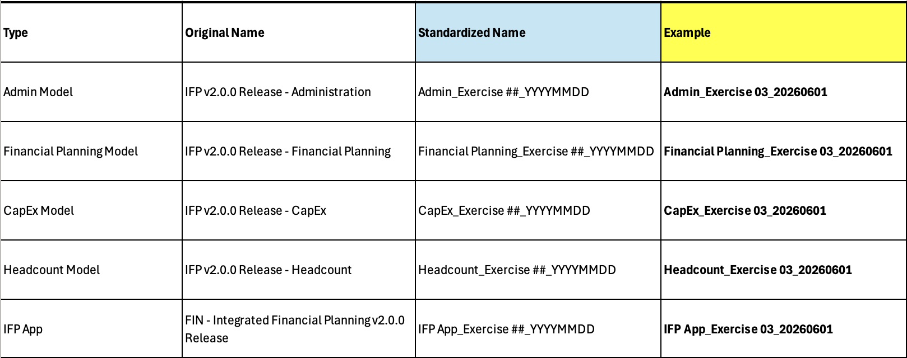

Ejercicio de configuración 3: Nuclear Plant – OpEx y Headcount
Ejercicio práctico para configurar IFP para una compañía de servicios públicos
Esta es una traducción automática de la versión original en inglés. Para la versión autoritativa y más actualizada, consulte la versión en inglés. Reporte cualquier problema de traducción a su contacto Anaplan.
Convención de nomenclatura estandarizada
Reemplace los nombres de modelo y app por defecto con un formato estandarizado antes de generar. El patrón recomendado es [ModelType]_Exercise ##_YYYYMMDD: esto asegura que cada generación produzca artefactos con nombres únicos y evita errores de generación por colisión de nombres cuando el mismo ejercicio se ejecuta más de una vez en el Tenant.

Escenario
Una empresa de servicios públicos que opera una planta nuclear necesita planeación de gastos operativos y headcount con un work breakdown structure (WBS) detallado para el seguimiento de proyectos de capital. No se requiere balance, cashflow ni margin planning.
Configuración del modelo
- Solo Operating Expense y Headcount
- NO usará: targets top-down, margin planning, CapEx, balance sheet, cashflow ni allocations
- Configurará una extensión para seguimiento de proyectos CapEx y PO
- Estrato de tiempo: mensual
- Tiempo de generación: por determinar
Configuración de Dimensiones
| Dimensión estándar | ¿Requerida? | Renombrar a | ¿OpEx? | Nº de niveles |
|---|---|---|---|---|
| Accounts | Sí | GL Accounts | — | — |
| Entity | Sí | — | Sí | 2 |
| Department | Sí | CostCenter | Sí | 3 |
| Job | Sí | — | — | 2 |
| Vendor | Sí | Supplier | — | 2 |
| Functional Area | Sí | WBS | — | 5 |
| Customer | No | — | — | — |
| Location | No | — | — | — |
Dimensiones personalizadas
| Lista personalizada | Tipo | Notas |
|---|---|---|
| Country | Plana | Atributo de apoyo |
| PO Headers | Plana | Para seguimiento de órdenes de compra (extensión) |
| PO Items | Plana | Para detalle por Line Item (extensión) |
| Managers | Plana | Para Jerarquía de gerencia |
Atributos de Dimensión
| Dimensión padre | Atributo | Tipo | Lista de atributo |
|---|---|---|---|
| Cost Center | Cost Ctr Manager | List | Managers |
| Cost Center | Entity | List | E2 Entity |
| Cost Center | Profit Center | List | C3 Cost Ctr |
| Cost Center | Country | List | Country |
Decisiones clave de configuración
- Functional Area reutilizada como WBS (Work Breakdown Structure) con 5 niveles para una Jerarquía de proyecto detallada
- Múltiples Dimensiones personalizadas para seguimiento de proyectos y compras (manejadas en extensión)
- Rica estructura de atributos en Cost Center para análisis multi-dimensional
- Alcance mínimo: solo OpEx + Headcount, manteniendo la configuración simple
PO Headers, PO Items y otras Listas personalizadas para este caso de uso NO forman parte de la generación base. Se añadirán como parte de la fase de extensión, después de que el modelo se haya generado con las Dimensiones core configuradas.